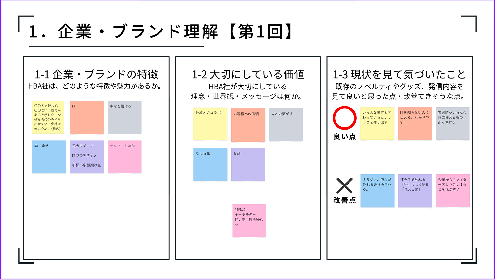
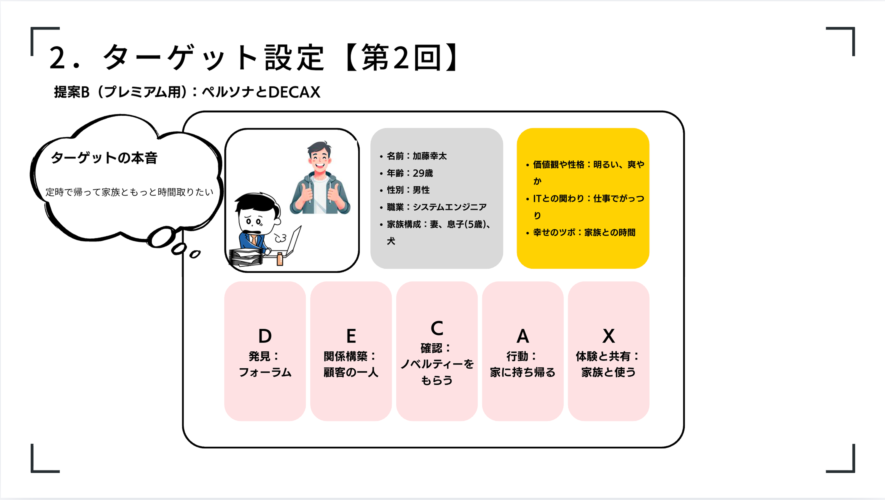
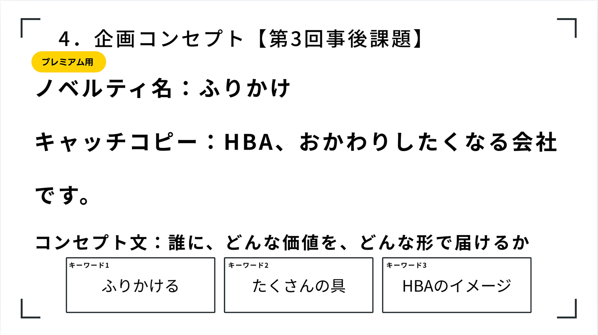
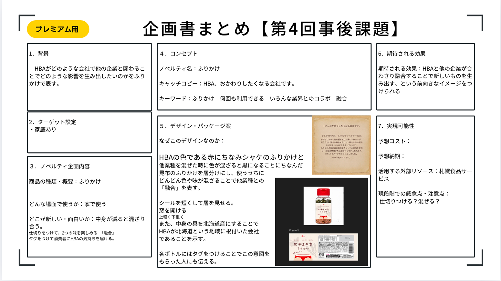
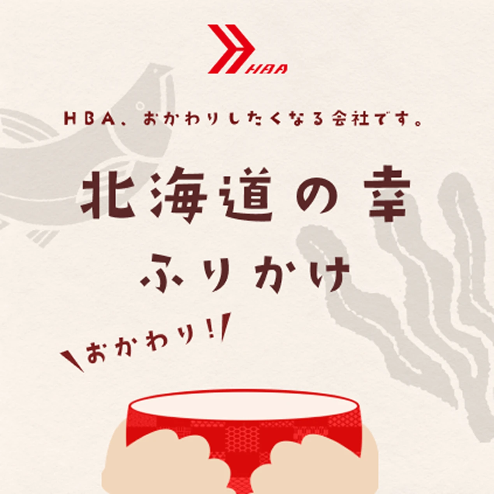
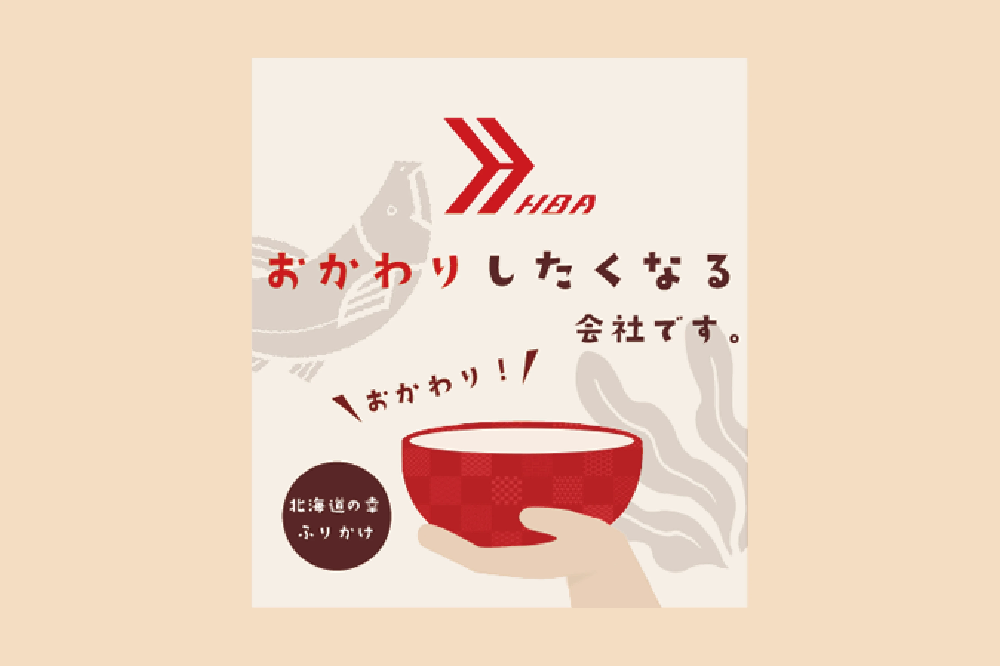
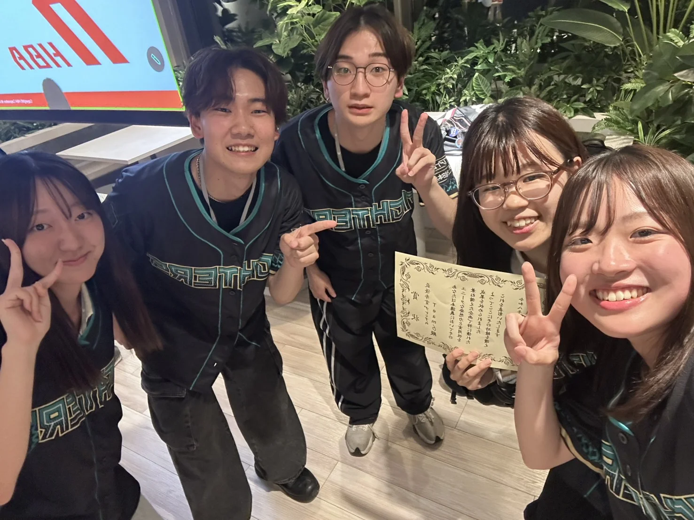

ノベルティ制作
- #ワークショップ課題
- #ラベルデザイン
北海道情報大学と株式会社HBAが共同で主催した「オリジナルノベルティ制作ワークショップ」に参加しました。本ワークショップでは、大学の持つアカデミックな開発環境と、IT企業の実践的なノウハウを融合させ、参加者に「ものづくりの一連のプロセス」を体感させることを目的として開催されました。
使っているソフト
Figma
Illustrator
制作期間
3週間
メンバー
プロダクトデベロッパー
プロジェクトマネージャー
デザイナー
マーケター
担当した役割
デザイナー

Background,Story
リサーチ
- 企業リサーチ

まずは企業が何をしている会社なのか理解するためにパンフレットやホームページ、記事などを隅々まで読み「企業、ブランドの価値」「大切にしている価値」「現状見て気付いたこと」の３つの項目に分けて調べました。
- ノベルティで伝えることをキーワード化

調べた企業の情報をもとに、HBAがノベルティ使用を通じて伝えるべきキーワードをばらまき用とプレミアム用でか各３つずつ考えました。
ターゲット
ターゲットの性格・行動特性をもとに購買行動モデルを考える。
ノベルティ施策の効果を高めるため、架空のペルソナ設定と購買行動モデル「DECAX」を用いたユーザー行動の設計を行いました。本企画では「来訪者との会議や対談時に手渡す」という対面での接触機会に着目し、ノベルティを受け取った相手が、企業の理解・購買へ至るまでの心理変化と行動プロセスを考えました。

コンセプト
２種類のふりかけを瓶に自分で入れる。
パッケージに同梱された「二色のふりかけ」を混ぜ合わせるというユニークな体験を通じて、「HBA×他業種」、そして「IT×ヒューマニティ（人間らしさ・食）」の融合というHBAの理念を強く印象づけることを目標としました。


Design
ワークショップで感じた社員の温かさやHBAの理念である「地域に深く根付いた企業」であることをデザインに落とし込むことを意識しました。企業認知向上がの目的だったので、HBAのロゴ周りの余白をとり、ふりかけを一目見ただけでロゴが目に入ってくるようなレイアウトにしました。メインカラーには、HBAの企業カラーであるハッピーレッド、ベースカラーは、ベージュ色を使い、親しみやすさを感じられるようになりました。
初期案
初期の案では、瓶のふりかけを台所に開いた時に、ノベルティを通して一番伝えたい、企業ロゴやキャッチコピーが遠目から見たときに見えづらいことや、茶碗を持っているイラストが下着に見える改善点がありました。

完成案

Result
１４チーム中１位となり最優秀賞を獲得。HBAのノベルティとして配布されることが決定されました。
